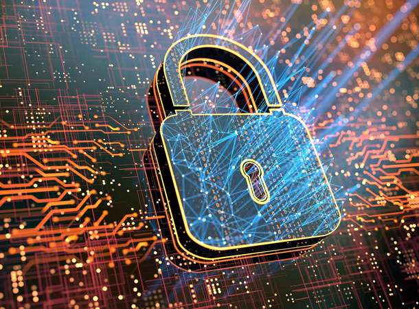
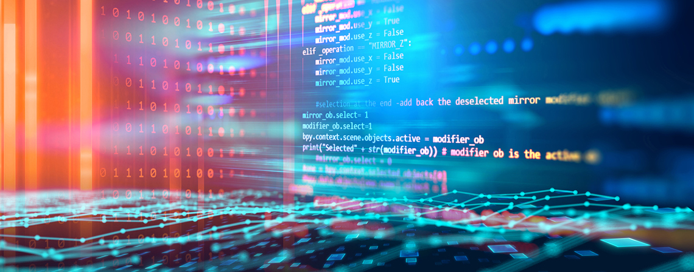
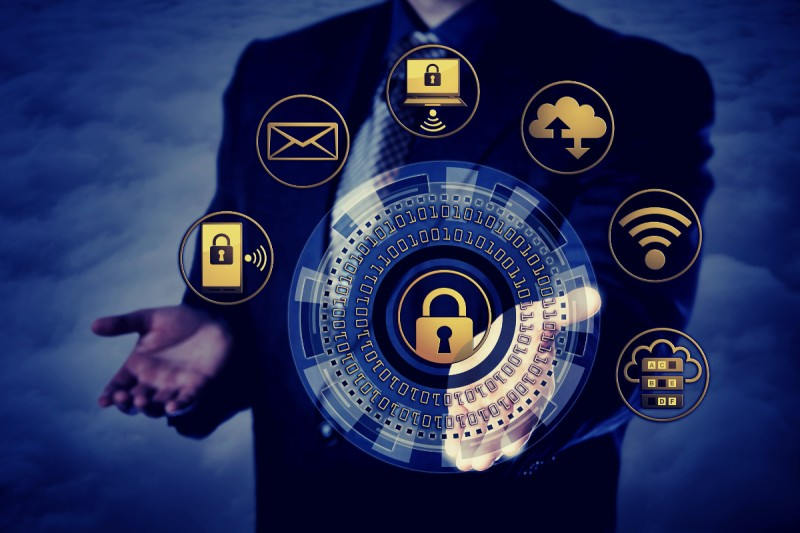
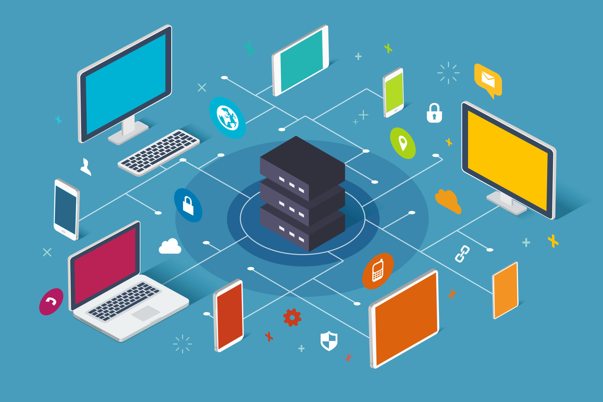
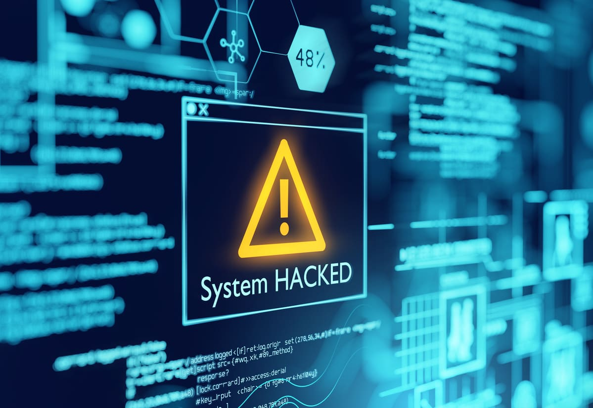

Bienvenue sur SecureBits
Bienvenue sur SecureBits, votre destination en ligne pour tout ce qui touche à la cybersécurité et à l'informatique. Nous sommes là pour vous aider à mieux comprendre l'importance de la sécurité en ligne, ainsi que pour vous aider à prendre des décisions éclairées sur votre carrière dans le domaine de la sécurité informatique.Dans le monde d'aujourd'hui, l'importance de la sécurité en ligne ne peut être sous-estimée. Avec la prolifération des technologies numériques et de l'internet, nous sommes plus connectés que jamais auparavant. Toutefois, cela signifie également que nous sommes plus exposés que jamais à des menaces en ligne telles que le vol d'identité, les cyberattaques, les logiciels malveillants, les rançongiciels et autres. Il est donc crucial de prendre des mesures pour protéger vos informations personnelles, vos données et votre vie privée.Notre équipe de professionnels en sécurité informatique est composée d'experts hautement qualifiés qui sont passionnés par la sécurité en ligne et qui travaillent sans relâche pour protéger les entreprises et les particuliers contre les menaces en ligne. Nous offrons des services de consultation en cybersécurité pour aider les entreprises à évaluer et à renforcer leur sécurité en ligne, ainsi que des services de protection de la vie privée pour les particuliers qui souhaitent protéger leurs informations personnelles et leur vie privée.Nous croyons que la cybersécurité est plus qu'un simple choix de carrière - c'est une vocation. En tant que tel, nous sommes déterminés à aider les étudiants et les professionnels qui cherchent à entrer dans le domaine de la sécurité informatique en leur fournissant des ressources éducatives, des conseils pratiques et des opportunités de formation. Nous sommes également fiers de promouvoir le domaine de la cybersécurité et de l'informatique auprès du grand public, afin d'encourager une meilleure compréhension de l'importance de la sécurité en ligne.En résumé, SecureBits est votre partenaire de confiance en matière de cybersécurité et d'informatique. Nous sommes déterminés à protéger vos informations personnelles, vos données et votre vie privée, ainsi qu'à aider les étudiants et les professionnels à réussir dans le domaine passionnant de la sécurité informatique. Contactez-nous dès aujourd'hui pour découvrir comment nous pouvons vous aider à sécuriser votre entreprise ou votre vie privée.
Cybersécurité vs. Informatique
Cybersécurité
La cybersécurité est un ensemble de pratiques et de technologies qui protègent les systèmes informatiques et les réseaux contre les attaques malveillantes. Les menaces à la sécurité en ligne peuvent provenir de plusieurs sources, y compris les virus, les logiciels malveillants, le phishing, les attaques DDoS, les vols d'identité, et bien plus encore. La cybersécurité vise à prévenir ces menaces en protégeant les données, les systèmes et les réseaux des entreprises et des particuliers.La cybersécurité offre de nombreux avantages. Elle permet de préserver la confidentialité des données, d'assurer la disponibilité des systèmes et des réseaux, et de garantir l'intégrité des informations. En protégeant les données, la cybersécurité aide également à préserver la réputation de l'entreprise et la confiance des clients. Elle peut également être une source de compétitivité pour les entreprises, car les clients sont plus susceptibles de faire confiance aux entreprises qui prennent la sécurité en ligne au sérieux.Bien que la cybersécurité présente de nombreux avantages, elle peut également avoir des défauts. Tout d'abord, elle peut être coûteuse, tant en termes de coûts de mise en place que de maintenance. De plus, la cybersécurité peut être difficile à mettre en œuvre, surtout pour les petites entreprises qui n'ont pas les ressources nécessaires. Enfin, la cybersécurité peut être un sujet complexe et technique, ce qui peut rendre difficile pour les gens de comprendre les risques et de savoir comment se protéger efficacement en ligne.
Informatique
L'informatique est une discipline qui concerne la conception, le développement, l'utilisation et la maintenance des systèmes informatiques. Elle englobe la programmation, la conception de logiciels, les systèmes d'exploitation, les réseaux, la sécurité informatique et bien plus encore. L'informatique est omniprésente dans notre vie quotidienne, que ce soit à travers les ordinateurs, les smartphones, les tablettes ou les objets connectés.L'un des avantages de l'informatique est la rapidité et l'efficacité avec laquelle les tâches peuvent être effectuées. Les ordinateurs et les logiciels peuvent traiter de grandes quantités d'informations en peu de temps, ce qui permet de gagner du temps et de l'argent dans de nombreuses industries. L'informatique facilite également la communication, la collaboration et l'accessibilité à l'information.Cependant, l'informatique présente également des inconvénients. L'une des principales préoccupations est la sécurité informatique, qui peut être compromise par des pirates informatiques ou des virus informatiques. L'automatisation croissante de nombreux emplois peut également conduire à la suppression d'emplois humains, ce qui peut avoir un impact négatif sur l'économie et la société dans son ensemble. Enfin, l'utilisation excessive de la technologie peut entraîner des problèmes de santé, tels que la fatigue oculaire, la sédentarité et la dépendance à la technologie.
Mais pourquoi choisir la cybersécurité plutôt que l'informatique ? La réponse est simple : la cybersécurité est un domaine en pleine croissance et il y a une forte demande pour des professionnels qualifiés. De plus, la cybersécurité offre des salaires attractifs et des opportunités de carrière passionnantes.
Nos services
Consultation en sécurité informatique
Vous cherchez à renforcer la sécurité de votre entreprise contre les menaces en ligne ? Nos consultants en sécurité informatique sont à votre disposition pour vous fournir des services de qualité adaptés à vos besoins. Nous offrons une large gamme de services de consultation en sécurité informatique, y compris des évaluations de vulnérabilité, des tests d'intrusion, des audits de sécurité et des recommandations pour les corrections nécessaires.Nos évaluations de vulnérabilité comprennent une analyse approfondie des systèmes, des réseaux et des applications de votre entreprise pour identifier les vulnérabilités potentielles. Nous évaluons les risques et les menaces en ligne qui pourraient affecter votre entreprise et nous vous fournissons un rapport complet sur les problèmes détectés ainsi que des recommandations pour les corriger.Nous réalisons également des tests d'intrusion pour tester la sécurité de vos systèmes et de vos réseaux. Nos experts simulent des attaques pour identifier les failles de sécurité dans vos systèmes et les corriger. Nous offrons également des audits de sécurité complets pour évaluer la sécurité globale de votre entreprise et nous vous fournirons un rapport complet avec des recommandations pour améliorer la sécurité.Nos services de consultation en sécurité informatique sont proposés à des prix compétitifs. Nous travaillons avec des clients de toutes tailles et de tous secteurs pour leur offrir des services de sécurité informatique de qualité adaptés à leur budget. Nous offrons également des contrats de consultation de sécurité informatique sur mesure pour répondre aux besoins spécifiques de votre entreprise.Contactez-nous dès maintenant pour discuter de vos besoins en matière de sécurité informatique et pour obtenir une estimation de nos services de consultation. Nous sommes là pour vous aider à protéger votre entreprise contre les menaces en ligne.
Formation en cybersécurité
Nous proposons un large éventail de services de sécurité informatique pour aider les entreprises et les particuliers à protéger leur vie privée et leurs données sensibles. Outre nos consultations et audits de sécurité personnalisés, nous proposons également des formations en cybersécurité pour permettre aux entreprises de former leurs employés et de les sensibiliser aux bonnes pratiques de sécurité.Nos formations en cybersécurité sont dispensées par des experts en sécurité informatique ayant une expérience pratique de la sécurité des systèmes d'information. Nous offrons des programmes de formation sur mesure, adaptés aux besoins de chaque entreprise ou individu. Nos formations couvrent des sujets tels que la gestion des risques, la conformité réglementaire, la sécurité des applications, la sécurité des réseaux et bien plus encore.En plus de nos formations en cybersécurité, nous offrons également des services de consultation en sécurité informatique pour aider les entreprises et les particuliers à identifier et à atténuer les risques de sécurité. Nos consultants en sécurité informatique travaillent en étroite collaboration avec nos clients pour comprendre leurs besoins et leur offrir des solutions personnalisées. Nous proposons des audits de sécurité, des tests de pénétration, des évaluations de la sécurité des applications et bien plus encore.Nos prix pour nos services de consultation et de formation en sécurité informatique sont compétitifs et adaptés aux besoins de chaque client. Nous croyons que la sécurité informatique devrait être accessible à tous et nous nous efforçons de fournir des services de qualité à des prix raisonnables. Contactez-nous dès aujourd'hui pour en savoir plus sur nos services et nos tarifs.
Solutions de sécurité informatique
Chez SecureBits, nous sommes spécialisés dans la sécurité informatique pour les entreprises et les particuliers. Nous proposons une gamme de services de sécurité informatique pour vous aider à protéger vos données et votre vie privée. Nous travaillons avec des marques leaders du marché pour vous offrir des solutions de sécurité fiables et de qualité supérieure.Nos services comprennent des consultations pour évaluer les risques de sécurité de votre entreprise et recommander des solutions de sécurité personnalisées. Nos experts en sécurité informatique peuvent également fournir des services de gestion de la sécurité, des tests de pénétration, des audits de sécurité, et plus encore.Nous offrons des solutions de sécurité informatique à des prix compétitifs pour répondre à tous les budgets. Nos prix varient en fonction du type de service et de la complexité du travail. Par exemple, une consultation de sécurité pour une petite entreprise peut coûter à partir de 500€, tandis qu'un test de pénétration complet peut coûter jusqu'à 3000€.Chez SecureBits, nous sommes fiers de fournir des services de sécurité informatique de qualité supérieure à des prix compétitifs pour protéger votre entreprise et vos données contre les menaces de sécurité en ligne. Contactez-nous pour en savoir plus sur nos services et nos tarifs.
